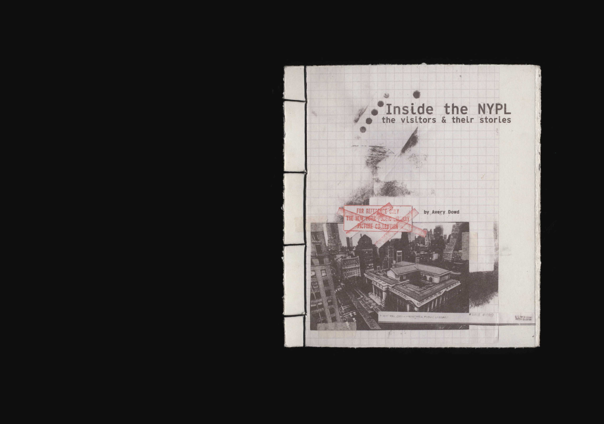
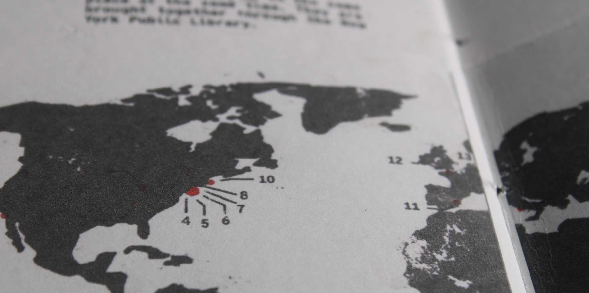
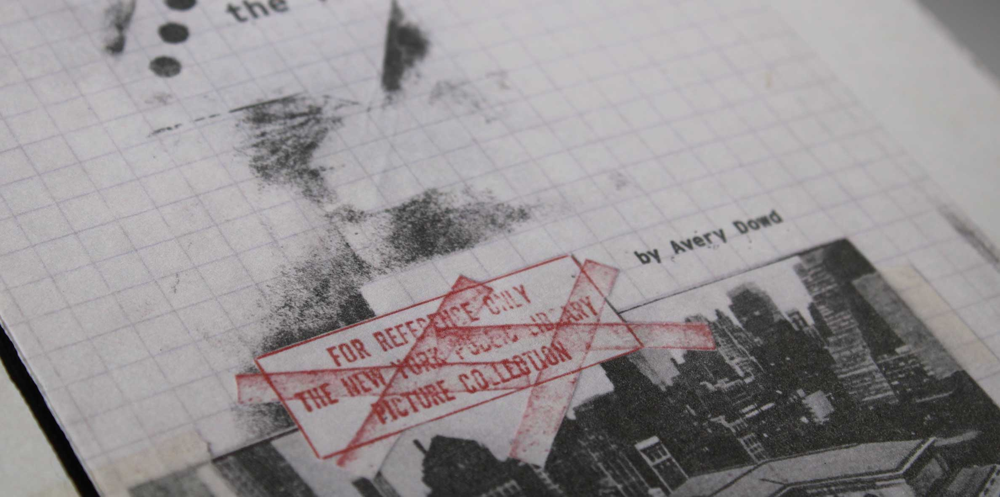
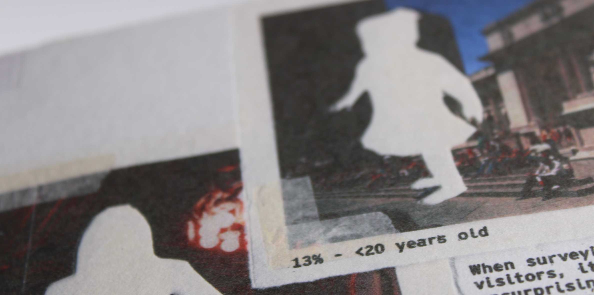

HOME
WORK
ARCHIVE
RESUME/CV
[07]
Inside the NYPL
BOOK DESIGN
DESCRIPTION
As a part of an investigation into New York City cultural institutions, two libraries were selected to create books about. Each book explores a topic that was found in or related to the library.
Many consider the New York Public Library as more of a tourist attraction than a place to work or study. It's often loud, unfriendly, and way too busy. New Yorkers who go in search of books or librarian assistance are typically sent away elsewhere. Curious to learn what other people's experiences were with the library, 15 users were surveyed. The results gathered were turned into infographics throughout the book.
< BACK
NEXT >

INSIDE THE NYPL
01 / 10


